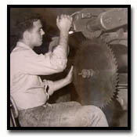

About Us
Family owned for over 45 years

Since 1957, Tri-State Saw & Tool Company has had an enduring reputation for excellence and outstanding craftsmanship in the woodworking cutting tool industry. Originally established as a sharpening service for the Greater Atlanta area, we progressed through the years into a full service company that provided quality brazed-in carbide tooling and service for the southeastern region of the United States.
In the early 1980’s, Tri-State Tooling Technologies changed the face of the woodworking industry in the United States with the development of what is now known as Insert Tooling. We became the first company in the United States to design and manufacture woodcutting tools that used replaceable, or “insertable” carbide knives for use in the cabinet, furniture and moulding industries.
The 1990’s saw many tooling manufacturers come and go, but our dedication to producing the highest quality, user friendly cutting tools, secured our place in the industry as the premier source for precision tooling of unmatched distinction.
At Tri-State Tooling Technologies we have been manufacturing insert tooling in the U.S. longer than anyone else, and specialize in what we do. Working closely with our customers has helped us to design tooling to best meet the woodworkers’ needs.
Today, Tri-State Saw & Tool remains committed to excellence and outstanding craftsmanship in all products and services that we offer. We take pride in the fact that we are a family owned business with Christian principles. We believe that experience, quality and knowledgeable customer service are the key elements to making a good product, and we strive to be the best. the best.
To GOD we give all the glory .